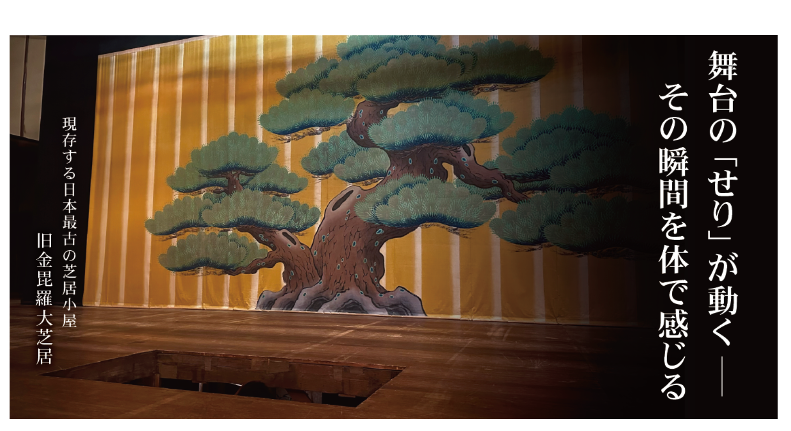

——静まり返った客席、落ちる灯り、
そして床下から立ち上がる瞬間を体験。
現存する最古の芝居小屋「旧金毘羅大芝居」
天保6年に建てられた、現存する日本最古の芝居小屋。明治期に「金毘羅座」と名付けられ現在の愛称として親しまれています。その後、昭和45年には旧金毘羅大芝居として国の重要文化財に指定されました。今も公開・活用され、春には「四国こんぴら歌舞伎大芝居」が行われます。舞台装置を今も人力で動かし、廻り舞台は奈落で4本の「力棒」を使い、足元の「力石」を踏みしめて回す江戸時代の仕組み。舞台と奈落をつなぐ「せり」や花道の「スッポン」も人の手で上げ下げされ、暗転時の明かり窓の開閉もすべて手作業です。
旧金毘羅大芝居の舞台機構「せり」を、
閉館後の劇場を貸し切って体験できる
観客として眺めてきた「あの高鳴り」を、演じる側の視点で味わえます。舞台が持つ「生きた仕掛け」を、自分自身の身体で知る。ここでしか出会えない一夜を、どうぞ。
舞台の余韻を持ち帰る絵 — 鶴と旧金毘羅大芝居の権利ビジュアル
本権利の「権利証」となるデジタルイラストは、書籍など数々の歌舞伎にまつわるイラストを手がけるイラストレーター辻和子氏の描き下ろし。外観は旧金毘羅大芝居に、ゆかりの「座紋の鶴」を想起させる意匠で、紺の法被をまとう鶴が、これから舞台へ向かう一歩手前の「間（ま）」で舞台の気配と高鳴りを。体験の前後に何度でも眺められる、あなたの「舞台の記憶」のしるしです。
商品・体験の詳細
重要文化財に指定され、現存する日本最古の芝居小屋 旧金毘羅大芝居（通称：金丸座）で、舞台下からせり上がる「せり」の仕掛けを特別に体験することができます。閉館後に貸し切り、役者が登場するあの瞬間を自ら体験できる希少な体験。さらに揚幕の体験や写真撮影なども可能です。
- 体験内容
- せりの仕掛け体験、舞台での記念撮影
- 開催場所
- 旧金毘羅大芝居（香川県仲多度郡琴平町）
- 実施日程
- 平日限定（年末年始・3〜4月の歌舞伎公演期間を除く）
- 時間
- 17:00〜18:00（集合 16:40、終了 18:00予定）
- 定員
- 1点につき1組（体験者最大2名＋同伴者最大10名）
- 所要時間
- 約60分
注意事項
- ・急な階段を利用するため、足腰に不安がある方はご参加をお控えください。
- ・文化財のため、建物や設備に触れる際は破損しないようご協力ください。
- ・その他の利用条件・注意事項は必ずご確認のうえご購入ください。
言語対応
- ・日本語
- ・英語・中国語・韓国語は外部通訳を手配可（希望される方は事前にチャットでお申込みください）
歌舞伎学会 会長 児玉竜一氏のコメント
日本の伝統文化として脈々と受け継がれてきた歌舞伎は、常に新しい挑戦によって息づいてきました。今回の取り組みもまた、その精神を体現するものと感じています。古典の美と現代の感性が響き合うことで、次の世代に受け継がれます。
—— ここが特別 ——
閉館後の貸切
人のいない静かな劇場で、舞台と向き合う贅沢な時間。
「せり」を実際に体験
床下からせり上がる独特の浮遊感と高揚をそのままに。
記念撮影
体験中の写真撮影が可能。特別な一瞬を記録できます。
衣装持参歓迎
衣装を身につけての参加も歓迎。世界観に浸って、唯一の一枚を。
※舞台装置に乗ったままの撮影は安全上ご遠慮ください。